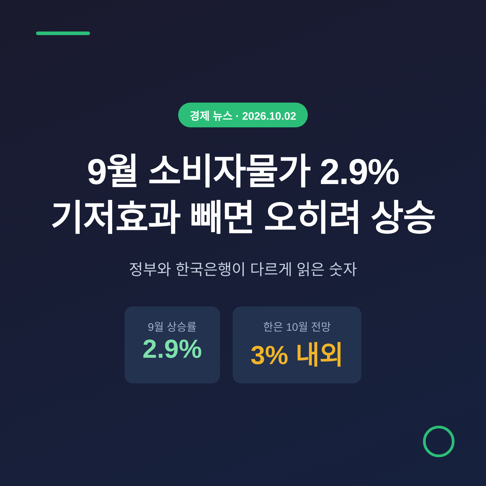
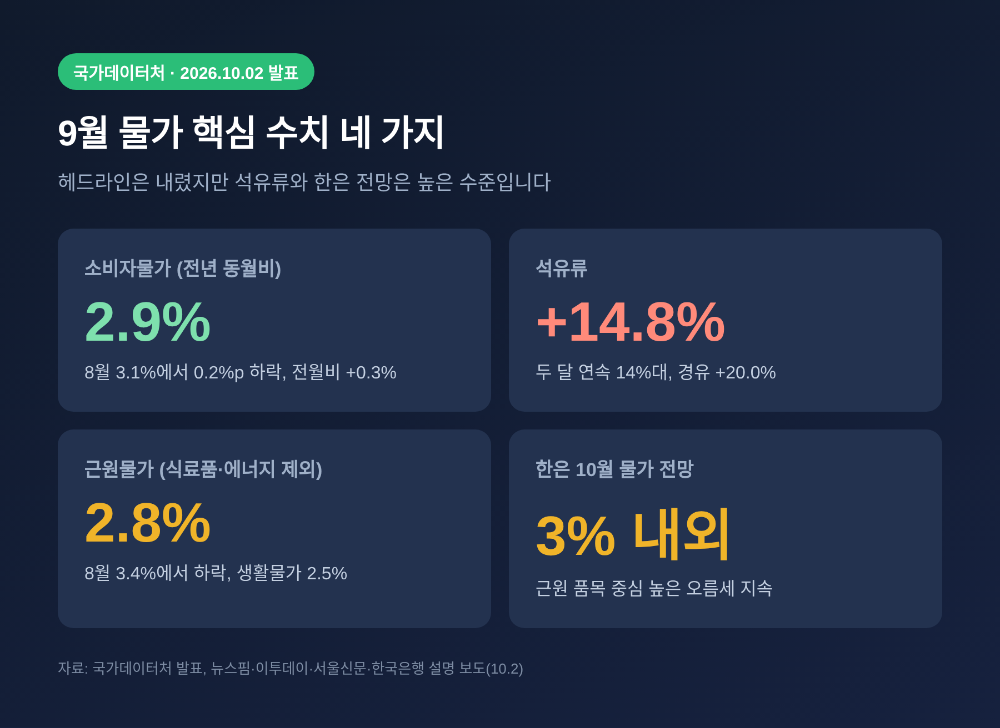
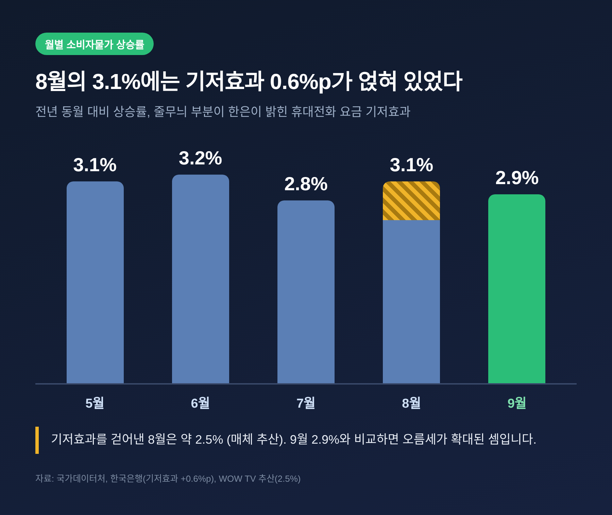
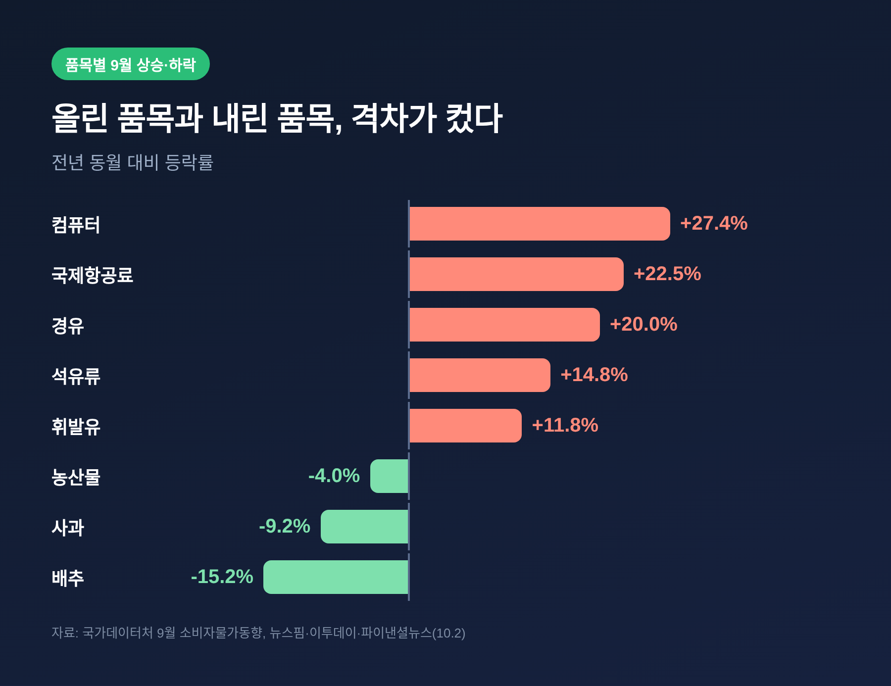
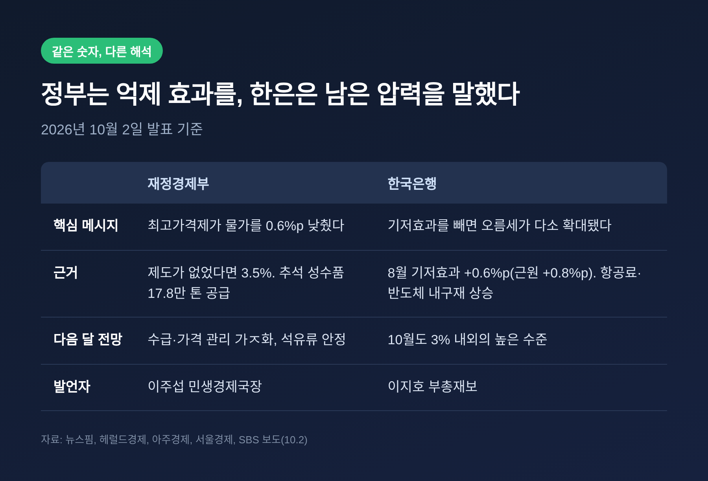
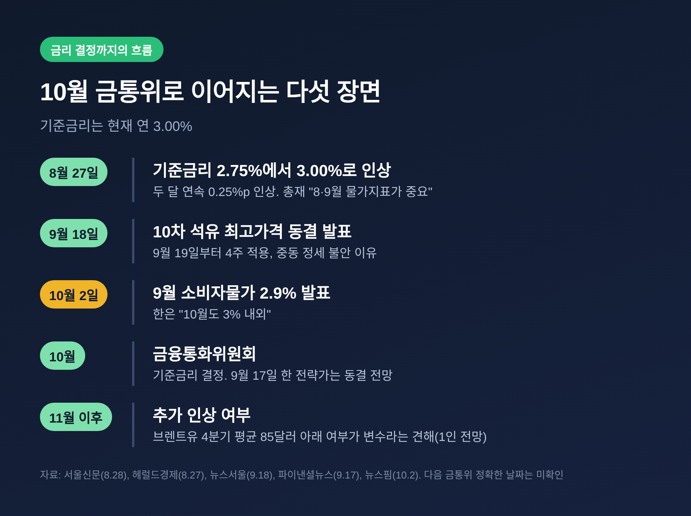

오늘은 2일 발표된 9월 소비자물가 동향을 정리해 보려 합니다. 숫자만 보면 8월 3.1%에서 2.9%로 내려와 한숨 돌린 듯하지만, 한국은행은 같은 숫자를 정반대로 읽었습니다. 정부와 한은이 왜 다르게 해석하는지, 그리고 이것이 10월 기준금리 결정에 어떤 의미인지 차례로 살펴보겠습니다.
국가데이터처에 따르면 9월 소비자물가지수는 120.43(2020년=100)으로, 1년 전보다 2.9% 올랐습니다. 8월 3.1%에서 0.2%p 낮아졌고, 두 달 만에 2%대로 돌아온 것입니다. 전월과 비교하면 0.3% 오른 수준입니다.
올해 흐름을 보면 5월 3.1%, 6월 3.2%, 7월 2.8%, 8월 3.1%, 9월 2.9%입니다. 1~9월 누계 상승률은 2.6%입니다. 6월을 정점으로 내려오다 8월에 다시 튀었고, 9월에 다시 식은 모양새입니다.
근원물가도 내려왔습니다. 식료품과 에너지를 뺀 지수는 8월 3.4%에서 9월 2.8%로, 생활물가는 3.2%에서 2.5%로 낮아졌습니다. 겉으로 드러난 성적표만 보면 분명 개선입니다.

핵심은 8월의 숫자에 있습니다. 지난해 8월 휴대전화 요금 감면이 있었기 때문에, 올해 8월에는 통신 관련 물가가 기저효과로 크게 뛰었습니다. 공공서비스 상승률이 8월 6.5%, 통신 물가가 16.6%였던 이유입니다. 9월에는 이 효과가 사라져 공공서비스 1.5%, 통신 2.0%로 내려앉았습니다.
한국은행은 이 효과가 8월 소비자물가를 0.6%p, 근원물가를 0.8%p, 생활물가를 1.1%p 끌어올렸다고 설명했습니다. 이지호 한은 부총재보는 물가상황 점검회의에서 이렇게 평가했습니다. "8월의 일시적인 기저효과가 소멸한 점을 고려하면 물가 오름세는 다소 확대된 것"이라는 것입니다.
한 방송사 보도는 이를 단순 계산해, 기저효과를 걷어낸 8월의 실질 상승률을 약 2.5%로 보았습니다. 이 계산이 맞다면 3.1%에서 2.9%로의 하락이 아니라, 2.5% 안팎에서 2.9%로의 상승인 셈입니다. 다만 이는 매체의 추산이며 한은이 직접 제시한 수치는 아닙니다.

가장 큰 몫은 석유류입니다. 9월 석유류는 1년 전보다 14.8% 올랐고, 8월(14.2%)에 이어 두 달 연속 14%대를 이어갔습니다. 경유가 20.0%, 등유가 19.5%, 휘발유가 11.8% 올랐으며, 전체 물가를 0.56%p 끌어올렸습니다. 중동 정세가 불안한 가운데 국제유가가 높은 수준을 유지한 영향입니다.
유가는 서비스 물가에도 번졌습니다. 이두원 국가데이터처 경제동향통계심의관은 유류할증료 단계가 8월 14단계에서 9월 21단계로 높아졌다고 설명했습니다. 국제항공료가 1년 전보다 22.5% 오른 배경입니다. 해외단체여행비도 19.3% 올랐습니다.
공업제품에서는 반도체 가격의 영향이 눈에 띕니다. 컴퓨터는 27.4%, 휴대전화는 8.3% 올라 내구재 상승률이 8월 4.1%에서 9월 4.9%로 커졌습니다. 가공식품도 출고가 인상이 순차적으로 반영되며 2.1% 올랐습니다.
반대편에서 물가를 눌러 준 품목도 있습니다. 농축수산물은 0.3% 내려 두 달 연속 하락했고, 사과는 9.2%, 배추는 15.2% 떨어졌습니다. 다만 전월과 비교하면 신선채소가 14% 넘게 뛰었고 호박은 75.4%나 올랐습니다. 연간 비교의 안정이 곧 체감의 안정은 아니라는 뜻입니다.

정부의 설명은 정책 효과에 무게를 둡니다. 재정경제부는 석유 최고가격제가 없었다면 9월 물가상승률이 3.5%였을 것으로 추정했습니다. 제도가 상승률을 0.6%p 낮췄다는 것입니다. 이주섭 민생경제국장은 "중동전쟁 장기화에 따른 물가 상방압력이 지속되는 만큼 안정적인 물가관리를 위해 최선을 다해야 한다"고 밝혔습니다. 추석 성수품은 계획 16만3천 톤보다 많은 17만8천 톤을 공급했고, 역대 최대 규모의 할인지원도 병행했습니다.
한은의 시각은 한 걸음 더 나아갑니다. 정책으로 눌러도 원가 압력은 계속 쌓이고, 근원 품목 중심으로 오름세가 이어진다는 진단입니다. 한은은 10월 소비자물가 상승률도 "3% 내외의 높은 수준"일 것으로 내다봤습니다. 일반인의 향후 1년 기대인플레이션율도 2.7%로 3개월째 같은 자리에 머물러 있습니다.
두 시각은 모순이라기보다 보는 층이 다릅니다. 정부는 가격을 누른 결과를, 한은은 눌린 가격 아래에 남은 압력을 말합니다. 예전에는 헤드라인 수치 하나가 곧 평가였습니다. 지금은 헤드라인과 근원을 함께 읽어야 합니다.

이 숫자가 특히 주목받는 이유는 금리에 있습니다. 한은은 8월 27일 기준금리를 연 2.75%에서 3.00%로 0.25%p 올렸습니다. 두 달 연속 인상이었습니다. 당시 신현송 총재는 금통위원들의 6개월 뒤 금리 전망 중간값이 3.25%라며, 한 차례 정도 더 올리는 완만한 경로를 예상한다고 밝혔습니다.
신 총재는 같은 자리에서 "10월 통화정책방향 회의 전에 8·9월 물가지표를 가져갈 수 있다. 물가지표가 중요하다"고 말했습니다. 그가 꼽은 판단 자료는 8·9월 물가, 2분기 명목 GDP, 기업심리지수였습니다. 9월 물가는 그 두 장의 물가 성적표 중 두 번째 카드입니다.
시장의 전망은 엇갈릴 수 있습니다. 9월 17일 한 외국계 금융사 전략가는 브렌트유가 4분기 평균 85달러 아래로 내려오지 않으면 11월과 내년 1분기에 추가 인상이 유력하다고 내다봤습니다. 10월 금통위는 동결 전망이었습니다. 이는 한 전문가의 견해이며, 다음 회의의 결과를 보장하는 것은 아닙니다.

첫째는 국제유가입니다. 정부는 9월 18일 산업통상부의 10차 최고가격 동결 때 미국과 이란의 재충돌, 홍해 불안 등을 이유로 들었습니다. 최고가격제는 3월 이후 시행되어 왔고, 정부는 지금까지 물가를 약 0.6%p 낮췄다고 설명합니다. 이 제도의 부담이 얼마나 오래 이어질지가 관건입니다.
둘째는 근원물가입니다. 한은이 말한 대로 항공료, 여행비, 반도체 관련 내구재가 근원을 떠받치고 있습니다. 가격 규제로 직접 누르기 어려운 영역이라는 점이 부담입니다.
셋째는 체감과의 간극입니다. 농산물은 연간으로 내렸지만 채소는 한 달 사이 14% 넘게 뛰었습니다. 통계가 편안해도 장바구니가 가벼워지지는 않는 이유입니다.
정리하면 이렇습니다. 9월 2.9%는 안도할 숫자이면서 경계할 숫자이기도 합니다.
"헤드라인은 내려왔지만, 바닥의 압력은 올라왔다." 이번 발표를 한 줄로 줄이면 이렇게 됩니다.
2.9%를 어떻게 읽을지 다시 묻는다면, 저는 이렇게 답하겠습니다. 내려온 이유를 확인하기 전에는 아직 내려왔다고 말하기 이르다고요.
※ 이 글은 정부·한국은행 발표와 언론 보도를 정리한 해설이며, 투자 권유가 아닙니다. 금리·환율·자산 관련 판단과 그에 따른 결과는 독자 본인의 책임입니다.
출처: 국가데이터처 9월 소비자물가동향 및 한국은행·재정경제부 설명을 전한 뉴스핌, 서울신문, 이투데이, 헤럴드경제, 아주경제, 서울경제, SBS, 파이낸셜뉴스 등 2026-10-02자 보도, 서울신문 2026-08-28, 헤럴드경제 2026-08-27, 파이낸셜뉴스 2026-09-17 보도.